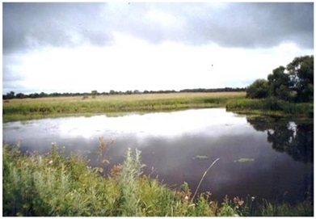
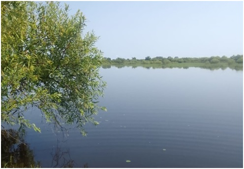

17. Залив Черепаший
Зоологический памятник природы областного значения "Залив Черепаший" создан постановлением главы администрации ЕАО от 16 ноября 1999 года.
Памятник природы "Залив Черепаший" образован в целях сохранения места обитания и воспроизводства популяции черепахи дальневосточной — редкого вида с сокращающейся численностью. Вид занесен в Красные книги РФ и ЕАО.
Памятник природы вместе с его охранной зоной располагается на площади 61 га на правом берегу р. Биджан в среднем её течении в двух километрах северо-восточнее с. Преображеновка Ленинского муниципального района.
Памятник природы представляет собой участок речной системы р. Биджан, включающий в себя безымянный залив и прилегающее к нему околоводное пространство. Это мелководный водоем с песчано-илистым дном. Охранная зона включает в себя участки пойменного осоко-вейникового луга, перемежающиеся с заболоченными участками и мелкими озерцами с единичными вкраплениями древесной растительности. Охране подлежит природный комплекс залива, находящийся в границах памятника природы — место обитания и воспроизводства приамурской популяции дальневосточной черепахи — реликтового пресмыкающегося, единственного представителя отряда черепах, обитающего в пресных водоёмах Дальнего Востока России. Охране подлежат как сами особи данного вида, так и места кладки яиц.

